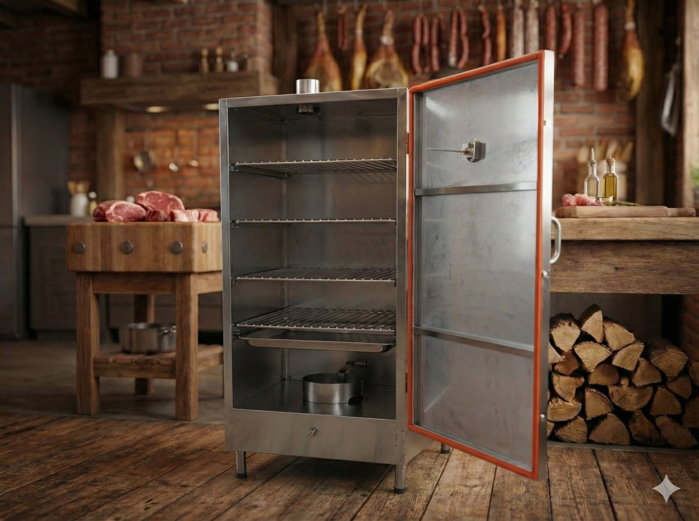
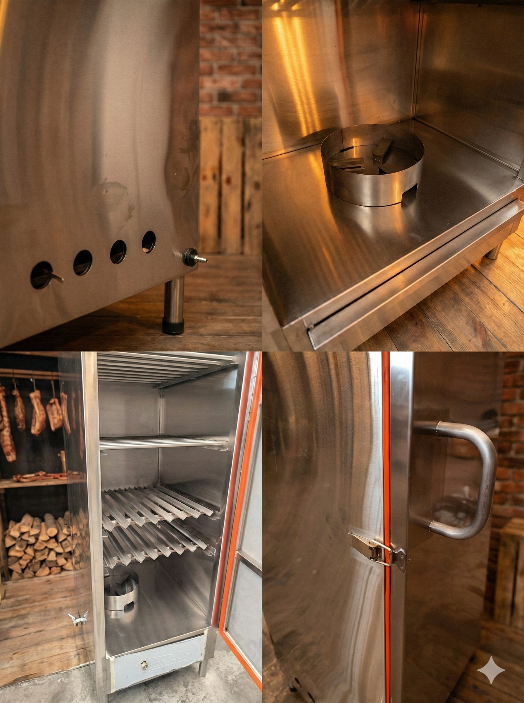

Ahumador Multifunción
Versatilidad y precisión para el ahumado profesional
Experiencia Ahumada Macrocook
Nuestro ahumador multifunción está diseñado para chefs y entusiastas que buscan resultados profesionales. Fabricado con acero de alta resistencia y acabados precisos, permite un control total sobre el flujo de humo y la temperatura interna.
Ideal para carnes, embutidos y pescados, garantizando un sabor auténtico y una cocción uniforme gracias a su sistema de bandejas modulares.
Características Principales
- Construcción: Acero Robusto con protección térmica
- Control de Clima: Termómetro de precisión integrado
- Capacidad: Sistema de 4 a 6 bandejas removibles
- Drenaje: Sistema de recolección de grasas
- Versatilidad: Ahumado en frío y caliente
Detalles del Ahumador

Vista Frontal

Cámara de Cocción

Componentes y Acabados